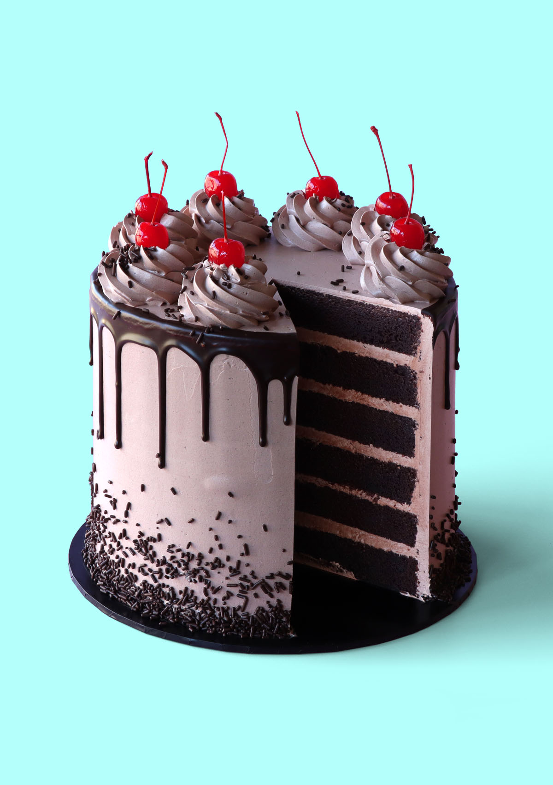

Beautiful Skies!
Beautiful Seas!
It is likely enough that in the rough outhouses of some tillers of the heavy lands adjacent to Paris, there were sheltered from the weather that very day, rude carts, bespattered with rustic mire, snuffed about by pigs, and roosted in by poultry, which the Farmer, Death, had already set apart to be his tumbrils of the Revolution. But that Woodman and that Farmer, though they work unceasingly, work silently, and no one heard them as they went about with muffled tread: the rather, forasmuch as to entertain any suspicion that they were awake, was to be atheistical and traitorous.


Two other passengers, besides the one, were plodding up the hill by the side of the mail. All three were wrapped to the cheekbones and over the ears, and wore jack-boots. Not one of the three could have said, from anything he saw, what either of the other two was like; and each was hidden under almost as many wrappers from the eyes of the mind, as from the eyes of the body, of his two companions. In those days, travellers were very shy of being confidential on a short notice, for anybody on the road might be a robber or in league with robbers.
The stillness consequent on the cessation of the rumbling and labouring of the coach, added to the stillness of the night, made it very quiet indeed. The panting of the horses communicated a tremulous motion to the coach, as if it were in a state of agitation. The hearts of the passengers beat loud enough perhaps to be heard; but at any rate, the quiet pause was audibly expressive of people out of breath, and holding the breath, and having the pulses quickened by expectation.
Something of the awfulness, even of Death itself, is referable to this. No more can I turn the leaves of this dear book that I loved, and vainly hope in time to read it all. No more can I look into the depths of this unfathomable water, wherein, as momentary lights glanced into it, I have had glimpses of buried treasure and other things submerged. It was appointed that the book should shut with a spring, for ever and for ever, when I had read but a page.
Tellson’s Bank had a run upon it in the mail. As the bank passenger—with an arm drawn through the leathern strap, which did what lay in it to keep him from pounding against the next passenger, and driving him into his corner, whenever the coach got a special jolt—nodded in his place, with half-shut eyes, the little coach-windows, and the coach-lamp dimly gleaming through them, and the bulky bundle of opposite passenger, became the bank, and did a great stroke of business. The rattle of the harness was the chink of money, and more drafts were honoured in five minutes than even Tellson’s, with all its foreign and home connection, ever paid in thrice the time.
Beautiful Butterflies!